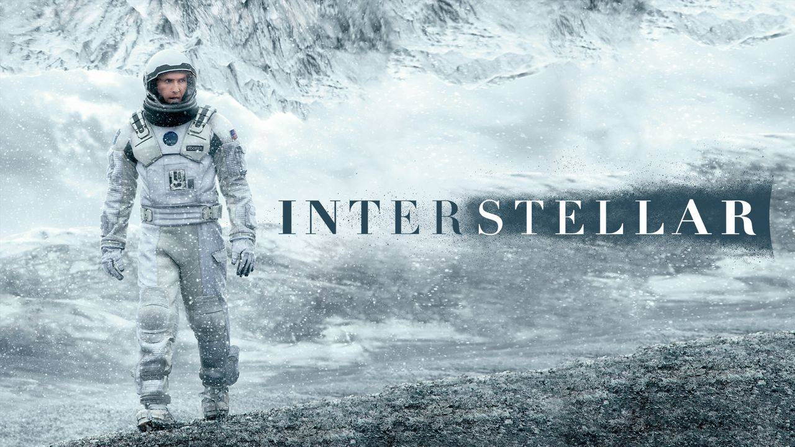

Hello. I am Ahmet Fatih Çopur! I live in Ankara. I like watching sci-fi movies so much. I am fan of Interstellar! I interested in web development. I learned a lot amazing things in this education series from Kodluyoruz and Keep learn to new things! Come with us!

Interstellar is a science ficton movie that topic's is about space and created by Christopher Nolan. That movie came to Turkey in 2014.
In this movie, I like main role player and his little child.